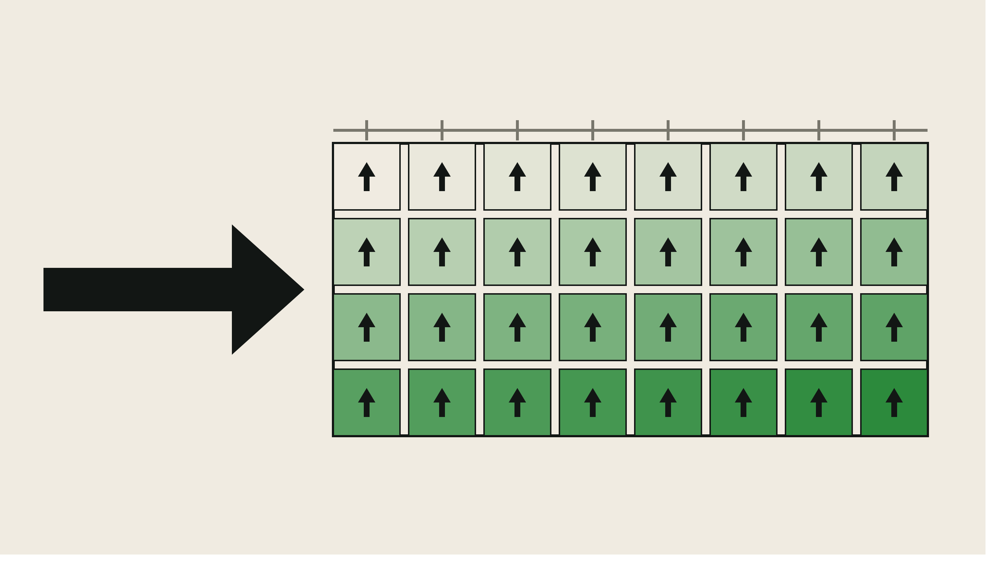

05 · GPU

Grid-Zellen = Threads ◆ gleiches Symbol im Inneren = gleiche Instruktion ◆ unterschiedliche Farbtöne = unterschiedliche Daten ◆ dicke Pfeil = eine Warp-Instruktion für alle.
──────────◆──────────◆──────────◆──────────◆──────────
Eine einzelne CPU hat im vorigen Kapitel
04_PerceptronOnCPUgezeigt, dass ein neuronales Netz im Prinzip nur ein sehr kurzes Assembler-Programm ist. Aber schon bei einem MLP mit ein paar tausend Neuronen wird klar: eine seriell arbeitende CPU wird das nie in brauchbarer Zeit schaffen. Die Antwort auf diese Skalierungsgrenze ist die GPU — und die Geschichte, wie ein für Videospiele gebauter Grafik-Beschleuniger zum wichtigsten Bauteil moderner KI wurde, ist eine der schönsten Illustrationen des Zuse-Prinzips aus00_Fundament: eine Skalierungsgrenze wurde nicht durch Theorie überwunden, sondern durch Zweckentfremdung vorhandener Hardware.
🌉 Der Anfang: Warum eine CPU nicht reicht¶
Am Ende von Kapitel 04_PerceptronOnCPU steht ein Perceptron in 16
Instruktionen auf einer 4-Bit-CPU. Kapitel 2 dieses Buches wird die XOR-
Grenze mit einem MLP einreißen. Aber ein MLP mit 784 Eingängen (MNIST),
128 Neuronen in der Hidden Layer und 10 Ausgängen braucht pro Forward-Pass
bereits rund \(10^5\) Multiplikationen — für Training über 60 000 Beispiele
in mehreren Epochen schnell \(10^{10}\) Operationen.
Eine CPU, die pro Takt eine Multiplikation ausführt, ist für diese Aufgabe das falsche Werkzeug — nicht weil sie es nicht könnte (jede CPU ist Turing-vollständig), sondern weil sie den falschen Kompromiss zwischen Latenz und Durchsatz eingeht: sie ist darauf optimiert, einen Kontroll- fluss möglichst schnell durch viele verschiedene Instruktionen zu jagen (Branch Prediction, Out-of-Order, riesige Caches). Was wir stattdessen brauchen: dieselbe, sehr einfache Rechnung, tausendfach parallel auf verschiedenen Daten — SIMD (Single Instruction, Multiple Data) bzw. das SIMT-Modell moderner GPUs.
Die zentrale Beobachtung dieses Kapitels: genau diese Bauart existierte schon — aus einem ganz anderen Grund.
🕰️ Historischer Kontext: Vom Bildschirm zum KI-Rechenwerk¶
| Jahr | Ereignis | Bedeutung |
|---|---|---|
| 1981 | IBM MDA/CGA — erste „Graphics Adapters" | Grafik ist zunächst ein Speicher (Framebuffer), keine Recheneinheit |
| 1996 | 3dfx Voodoo — Consumer-3D-Beschleuniger | Fixed-Function-Pipeline: Dreiecke rasterisieren, texturieren — in Hardware, aber nicht programmierbar |
| 1999 | NVIDIA GeForce 256, Marketingbegriff „GPU" | Transform & Lighting in Hardware, weiter fixed-function |
| 2001 | GeForce 3 / DirectX 8 — erste Shader | Kleine, programmierbare Kernel pro Vertex bzw. Pixel — der entscheidende Bruch |
| 2003 | „GPGPU" wird zum Forschungsthema | Shader sind eigentlich kleine, parallele Prozessoren — man könnte sie zweckentfremden |
| 2004 | BrookGPU (Ian Buck et al., Stanford) | Erstes Forschungsframework, das GPUs als Stream-Prozessoren ansprechbar macht — via OpenGL/DirectX-Tricks |
| 2006 | CUDA 1.0 (NVIDIA, mit Ian Buck an Bord) | Direkte, C-artige Programmierschnittstelle für die GPU — kein Umweg mehr über Grafik-APIs |
| 2009 | Raina, Madhavan, Ng: Large-scale Deep Unsupervised Learning using GPUs | Erster systematischer Nachweis: neuronale Netze trainieren auf GPUs 10–70× schneller |
| 2012 | AlexNet (Krizhevsky, Sutskever, Hinton) auf zwei GTX 580 | Halbierung der ImageNet-Fehlerrate — der Moment, in dem Deep Learning und GPU-Skalierung sich empirisch als Paar bewähren |
| 2017 | NVIDIA Volta — Tensor Cores | Spezialisierte Matrix-Multiplikationseinheiten in der GPU — die GPU beginnt, sich der KI anzupassen |
| heute | H100, B200, TPUs, MI300 | „AI Accelerator" ist eine eigene Gerätekategorie — im Kern immer noch: sehr viele einfache Rechenwerke, sehr breite Speicherbandbreite |
Zwei Beobachtungen sind wichtig.
Erstens: Zwischen der Erfindung der programmierbaren Shader (2001)
und dem ersten Deep-Learning-Erfolg auf GPUs (2009–2012) liegen 8–11
Jahre. In dieser Zeit wurde die GPU nicht für KI umgebaut — sie war
schon da, aus Gründen des Videospielmarktes. Deep Learning hat sie
gefunden, nicht bestellt. Genau das Muster, das 00_Fundament als
Zuse-Weg bezeichnet: Ein neues Anwendungsfeld greift auf Hardware zurück,
die aus einem anderen Grund entstanden ist.
Zweitens: Der Übergang Brook → CUDA ist selbst ein Musterbeispiel für den roten Faden dieses Buches. BrookGPU (2004) war ein akademisches Forschungsframework, das GPUs durch Grafik-APIs hindurch für allgemeine Rechnungen missbrauchte — Datenarrays wurden als Texturen kodiert, Kernel als Pixel-Shader, das Ergebnis in einen Framebuffer geschrieben, den niemand anzeigen sollte. Ian Buck, damals Doktorand bei Pat Hanrahan in Stanford, wechselte 2004 zu NVIDIA und war einer der Architekten von CUDA (2006/2007) — im Kern derselbe Programmierstil (Streams von Daten, Kernel darauf), aber mit direkter Hardwareunterstützung. Ein Forschungsprototyp wird zum industriellen Standard, weil er sich als richtig herausgestellt hat.
Die Church-Turing-These sagt uns: die GPU rechnet nichts, was eine CPU nicht auch berechnen könnte. Die Praxis sagt: sie rechnet es um Größenordnungen schneller — und dieser Unterschied ist der Unterschied zwischen „Deep Learning gibt es als Idee" (1986, Rumelhart) und „Deep Learning gewinnt ImageNet" (2012, Krizhevsky).
🧠 Die Kernidee: Ein Shader ist ein Kernel ist ein Neuron¶
Der begriffliche Sprung ist einfacher als er wirkt. In einem Grafik-Shader schreibt man ungefähr:
// Pixel-Shader (Pseudocode) — wird für JEDEN Pixel unabhängig aufgerufen
farbe(x, y) = beleuchtung(position, normale, textur[u, v])
Derselbe kurze Code läuft für Millionen von Pixeln unabhängig und parallel. Die Hardware ist genau darauf zugeschnitten — viele einfache Rechenkerne, jeder mit wenigen Registern, alle mit gemeinsamem Zugriff auf einen sehr breiten Speicher.
BrookGPU (2004), noch mit Grafik-Vokabeln:
kernel add(float a, float b, out float c) { c = a + b; }
add(A, B, C); // läuft parallel für alle Elemente
CUDA (2006), fast wie normales C:
__global__ void add(const float* a, const float* b, float* c, int n) {
int i = blockIdx.x * blockDim.x + threadIdx.x;
if (i < n) c[i] = a[i] + b[i];
}
Der Sprung ist begrifflich winzig — von Farbe für einen Pixel berechnen zu ein Ergebnis für ein Array-Element berechnen. Aber genau dieser Sprung schließt die Lücke zum neuronalen Netz. Denn ein MLP-Forward-Pass ist im Kern eine Matrix-Vektor-Multiplikation:
Für jedes \(j\) eine unabhängige Summe, derselbe Code, ein anderer Daten- ausschnitt. Wortwörtlich dasselbe Rechenmuster wie „für jeden Pixel eine Farbe" — nur mit anderem Namen.
Die tiefe Pointe des Kapitels: Rosenblatt (1958), Rumelhart (1986) und selbst LeCun (1998) hatten keine GPU. Sie hatten die richtige Idee, aber nicht die Rechenleistung, um sie in einem Maßstab auszuprobieren, der die Idee sichtbar gemacht hätte. Der zweite KI-Winter (Ende der 1980er / 1990er) hatte, neben theoretischen Zweifeln, eine sehr handfeste Ursache: es fehlte die Hardware, um herauszufinden, ob die Skalierung funktioniert. Erst als über den Umweg Videospielmarkt → programmierbare Shader → GPGPU → CUDA plötzlich massiv parallele Fließkommarechenleistung für ~$1000 im PC-Gehäuse verfügbar war, konnte AlexNet 2012 den Beweis liefern, dass tiefe Netze mit genug Rechenleistung tatsächlich funktionieren. Alles danach — GPT-3, GPT-4, DeepSeek — ist eine Fortsetzung genau dieser Skalierungsgeschichte.
🧩 Warum GPUs so viel schneller sind als CPUs (bei der richtigen Aufgabe)¶
Es lohnt sich, kurz konkret zu machen, worin der Unterschied besteht — und wo er nicht liegt.
| Merkmal | Moderne CPU (z. B. Intel Core i9) | Moderne GPU (z. B. NVIDIA H100) |
|---|---|---|
| Kerne | 8–32 „große" Kerne | 10 000+ „kleine" Kerne |
| Kern-Optimierung | Latenz eines einzelnen Threads | Gesamtdurchsatz vieler Threads |
| Cache pro Kern | Groß (Megabytes) | Klein (Kilobytes) |
| Kontrolllogik | Sehr viel (Branch Prediction, OoO, Speculative Execution) | Minimal — mehrere Threads teilen sich eine Steuerung (SIMT) |
| Speicherbandbreite | ~50–100 GB/s | ~1–3 TB/s |
| Ideal für | Sequentiellen Code mit vielen Verzweigungen | Datenparallele Rechnung, wenige Verzweigungen |
Die entscheidende Zahl ist die Speicherbandbreite: eine H100 kann pro Sekunde ungefähr 30-mal mehr Daten aus ihrem eigenen Speicher lesen als eine CPU. Für Matrix-Multiplikationen — bei denen jedes Gewicht genau einmal gelesen und mit einem Eingang multipliziert wird — ist Bandbreite oft entscheidender als reine Rechenleistung.
Und die entscheidende Struktur ist SIMT: 32 Threads (bei NVIDIA
„Warp" genannt) führen zusammen dieselbe Instruktion aus, jeder aber auf
seinem eigenen Datenausschnitt. Wenn alle 32 zum Beispiel c[i] = a[i] +
b[i] ausführen, ist das ein einzelnes Steuerwort — genau wie in unserer
4-Bit-CPU aus Kapitel 1, nur 32-fach parallel. Der Preis: sobald sich
Threads im selben Warp unterschiedlich verzweigen (if), muss die GPU
beide Pfade nacheinander laufen lassen — genannt Warp Divergence. Genau
darum sind GPUs schlecht in Programmen mit vielen datenabhängigen
Verzweigungen, und gut in solchen wie neuronalen Netzen, in denen der
Kontrollfluss festgelegt und die Daten das einzig Variable sind.
🧠 Was du baust¶
Zwei kleine, aufeinander aufbauende Programme — beides in reinem Python, ohne CUDA-Installation, damit alle Leser mitmachen können:
-
Ein Software-SIMT-Simulator: eine kleine Klasse
GPU, die eine feste Anzahl „Threads" verwaltet, die parallel denselben Kernel auf verschiedenen Array-Indices ausführen. Wir bauen zunächstadd(a, b) → c(unser CUDA-Beispiel von oben), danndot(a, b) → smit einer klassischen Parallel-Reduktion (Baum- Summe in \(\log n\) Schritten). Man sieht: die Idee „viele Threads, dasselbe Programm, verschiedene Daten" ist keine schwarze Magie, sondern eine sehr klare Software-Architektur. -
Ein Matrix-Multiplikations-Vergleich: dieselbe Matrix-Multipli- kation einmal seriell (klassische drei ineinander verschachtelte Schleifen, wie eine CPU sie ausführt) und einmal über den SIMT- Simulator (Kachelung in \(16 \times 16\)-Blöcke, jeder Block wird parallel abgearbeitet). Wir messen die Anzahl der Rechenschritte — nicht Wanduhr-Zeit, weil das in Python nicht fair wäre — und sehen direkt den asymptotischen Vorteil.
Für Interessierte: ein optionaler dritter Baustein zeigt, wie derselbe
Matrix-Multiplikations-Kernel in echtem CUDA-C aussieht. Kompiliert
wird er nicht (das würde eine NVIDIA-GPU voraussetzen), aber der Code
steht in notes/matmul.cu mit Zeile-für-Zeile-Kommentaren daneben — als
Brücke zu jedem realen Deep-Learning-Framework.
🚀 Schnelleinstieg¶
Die Struktur in src/ und notes/:
src/
├── gpu_sim.py SIMT-Simulator (Klasse SIMT_GPU + Kernels)
├── test_simt.py Standalone-Beweis: CPU-seriell vs. GPU-parallel
└── matmul_compare.py MatMul seriell vs. gekachelt-parallel
notes/
└── matmul.cu Echtes CUDA-C zum Lesen (nicht kompilieren)
Schritt 0 — die Idee ohne echte GPU verstehen (kein PyTorch, kein CUDA, kein Netz):
Zeigt drei Vergleiche:
1. Vektor-Addition: n=64 Elemente — CPU braucht 64 Schritte, GPU 8. Speed-up ~8× = warp_size. ✓ verifiziert.
2. ReLU mit vs. ohne Warp Divergence: branchless = 1 Schritt, divergent = 2 Schritte + 2 Divergenz-Zusatzsteps.
3. Skalarprodukt via Baum-Reduktion: n=8 Elemente in 5 statt 8 Schritten (1 Produkt + log₂(8)=3 Reduktion + 1 Write).
Schritt 1 — Matrix-Multiplikation:
Standard-Setup (n=32, block_size=8) liefert:
- CPU seriell: 32 768 Operationen (= n³)
- GPU gekachelt: 320 Schritte pro Ausgabe-Block, alle 16 Blöcke parallel
- Ergebnis: ~102× Speed-up — genau die Größenordnung, die AlexNet 2012 auf zwei GTX 580 zeigte
Parameter überschreibbar per --n 64 --block-size 16.
Schritt 2 — den echten CUDA-Code lesen:
Der gleiche Algorithmus in echtem CUDA-C (~50 Zeilen). Die Kommentare zeigen Zeile-für-Zeile, wie sich der Simulator zum echten Code verhält. Nicht kompiliert — als Lesestoff, damit man weiß, wie es "in echt" aussieht.
Alle Python-Programme laufen mit Python 3.7+ ohne externe Abhängigkeiten.
❗ Ehrliche Diskussion: Was zeigt dieses Modell — und was nicht?¶
Was es korrekt zeigt:
- Das SIMT-Ausführungsmodell — viele Threads, dasselbe Programm, verschiedene Daten.
- Die Parallel-Reduktion als Grundmuster für alle Summen-, Norm-, Softmax- und Attention-Rechnungen.
- Den Zusammenhang zwischen Pixel-Shader und Matrix-Kernel: es ist strukturell dasselbe.
Was es bewusst nicht zeigt:
- Echte Parallelität — der Simulator führt die Threads softwareseitig nacheinander aus, misst aber die Schritte so, als liefen sie parallel. Auf einer echten GPU sind es tatsächlich Millisekunden statt Sekunden.
- Speicherhierarchien — reale GPUs haben Global Memory, Shared Memory pro Threadblock und Register pro Thread. Das ist der Kern jeder GPU-Performance-Optimierung, aber didaktisch würde es die Grundidee begraben.
- Warp Divergence, Bank Conflicts, Coalescing — die schmutzigen Details, die Deep-Learning-Framework-Entwickler beschäftigen, aber nichts an der zugrundeliegenden Idee ändern.
- Tensor Cores — die matrix-multiplikations-spezifische Hardware in aktuellen GPUs. Konzeptionell ist das ein weiterer Skalierungsschritt derselben Idee: statt einzelner Multiplikationen pro Zyklus rechnet eine Einheit gleich eine kleine 4×4-Matrix-Multiplikation.
📝 Übungen¶
1. Kernel schreiben. Erweitere den SIMT-Simulator um einen Kernel
relu(a) → c, der c[i] = max(0, a[i]) berechnet. Wie viele Schritte
braucht er im Vergleich zu add? (Antwort: gleich viele — jedes Element
ist unabhängig.)
2. Divergenz beobachten. Schreibe einen Kernel, der abhängig von einer
Bedingung im Datum zwei verschiedene Zweige ausführt (z. B. „wenn
a[i] > 0, quadriere, sonst verdopple"). Der Simulator zählt die
Schritte — vergleiche mit einem einheitlichen Kernel. Wo entsteht der
Overhead?
3. Reduktion verstehen. Führe dot mit n=8 durch und zeichne den
Baum der Additionen auf Papier. Wie viele Schritte sind es? Wie viele
wären es ohne Parallelität?
4. Matrix-Multiplikation kacheln. Ändere matmul_compare.py so, dass
die Blockgröße konfigurierbar ist. Wie ändert sich die Schrittzahl bei
Blockgrößen 4, 8, 16, 32? (Beobachtung: kleinere Blöcke → mehr Overhead
für die Synchronisation, größere Blöcke → mehr Ressourcen pro Block.)
5. Bandbreite gegen Compute. Für die Matrix-Multiplikation \(C = A \cdot B\) mit \(n \times n\)-Matrizen: wie viele Lesezugriffe auf den Speicher, wie viele Multiplikationen? Ist diese Aufgabe eher memory- bound oder compute-bound? (Antwort: mit naiver Implementierung \(O(n^3)\) Zugriffe für \(O(n^3)\) Multiplikationen — genau die Grenze, an der Cache-Nutzung / Kachelung alles entscheidet.)
6. Vom Shader zum Neuron. Schreibe den Pixel-Shader-Pseudocode aus dem Abschnitt oben so um, dass er formal eine MLP-Schicht beschreibt. Welche Zeile ändert sich, welche bleibt gleich?
🧭 Wo steht die GPU heute?¶
Kurz gesagt: Ohne GPU keine moderne KI. Jedes ernstzunehmende neuronale Netz der letzten zwölf Jahre wurde auf GPUs (oder deren Verwandten TPUs, NPUs) trainiert. NVIDIAs Marktkapitalisierung (2024/2025 auf Rang 1–2 weltweit) ist der ökonomische Ausdruck genau dieser einen Erkenntnis.
Aber der Blick nach vorn ist interessant:
- Tensor Cores und Transformer Engines — die GPU passt sich der KI an. Das ist eine leise Verschiebung: die allgemein programmierbare GPU der 2010er Jahre wird schrittweise zur matrix-multiplikations- spezialisierten KI-Hardware der 2020er. Manche nennen das den „Fixed-Function-Rückschritt" — aber es ist derselbe Kompromiss wie 1996 bei den 3D-Beschleunigern: mehr Leistung durch weniger Flexibilität.
- TPUs (Google), Trainium (AWS), MI300 (AMD), Groq — der GPU-Markt spaltet sich in Trainings- und Inferenz-Beschleuniger auf. Die Idee bleibt dieselbe: massiv parallele Matrix-Multiplikation.
Was fast alle diese Chips gemeinsam haben: Sie sind weiterhin programmierbar in einem CUDA-ähnlichen Modell — Kernel, Threads, Blöcke, Streams. Der begriffliche Rahmen, den Ian Buck 2004 mit BrookGPU vorgeschlagen hat, ist mit Abstand der langlebigste Teil dieser Geschichte.
🧠 Abschließende Bemerkungen¶
Wenn du dir dieses Kapitel angesehen hast, hast du gesehen, dass der Übergang von CPU zu GPU kein Sprung in eine neue Klasse von Berechnung ist — beide sind Turing-vollständig, beide rechnen dieselben Dinge. Der Sprung ist einer im Kompromiss: von wenigen, schnellen, flexiblen Kernen zu vielen, langsameren, spezialisierten. Und dieser Kompromiss war genau das, was neuronale Netze brauchten, um aus einer akademischen Idee zur technologischen Grundlage der 2020er Jahre zu werden.
Zwei Dinge, die man aus diesem Kapitel mitnimmt:
-
Hardware und Ideen bedingen sich gegenseitig. Die Backpropagation- Idee existierte 26 Jahre vor AlexNet. Was fehlte, war nicht die Theorie, sondern die Hardware, die die Theorie ausprobierbar machte. Wenn Teil 2 dieses Buches immer wieder betont „das nächste Modell wurde experimentell gefunden" — dann ist es zu einem Gutteil die GPU, die diese Experimente überhaupt möglich gemacht hat.
-
Zweckentfremdung ist ein legitimer Weg zum Fortschritt. GPUs wurden für Videospiele gebaut. Deep Learning hat sie sich genommen. Das ist kein Zufall und keine Ironie — es ist genau der Zuse-Weg aus
00_Fundament: baue etwas, das ein konkretes Problem löst, und überlasse es der Zukunft herauszufinden, welche anderen Probleme damit noch gelöst werden können.
🚀 Nächstes Kapitel: Netzwerk — wenn eine GPU nicht mehr reicht¶
Eine einzelne GPU reicht für kleine Modelle. GPT-3 (175 Milliarden Parameter) wurde auf rund 10 000 GPUs parallel trainiert. Das funktioniert nur, wenn diese GPUs untereinander sehr schnell kommunizieren können — was uns direkt zum nächsten Kapitel bringt: Netzwerk. Ohne zuverlässige, schnelle Verbindung zwischen Rechnern gäbe es kein GPT, kein DeepSeek, kein modernes verteiltes Training.
Damit schließt sich der Bogen von Teil 1 dieses Buches:
Alle sechs zusammen sind das Computational Minimum — das Fundament, auf dem alle folgenden Teile aufbauen.
📚 Referenzen¶
- Buck, I., Foley, T., Horn, D., Sugerman, J., Fatahalian, K., Houston, M., & Hanrahan, P. (2004). Brook for GPUs: Stream Computing on Graphics Hardware. ACM SIGGRAPH 2004. Das Paper, das die GPGPU-Ära einläutet.
- Nickolls, J., Buck, I., Garland, M., & Skadron, K. (2008). Scalable Parallel Programming with CUDA. ACM Queue, 6(2), 40–53. Die kanonische Einführung in CUDA aus NVIDIAs eigener Feder.
- Raina, R., Madhavan, A., & Ng, A. Y. (2009). Large-scale Deep Unsupervised Learning using Graphics Processors. ICML 2009. Der erste systematische Nachweis, dass Deep Learning auf GPUs signifikant schneller trainiert.
- Krizhevsky, A., Sutskever, I., & Hinton, G. E. (2012). ImageNet Classification with Deep Convolutional Neural Networks. NIPS 2012. Das AlexNet-Paper — der Moment, in dem GPU-basiertes Deep Learning auf Rang 1 landet.
- NVIDIA (2017 ff.). Volta Architecture Whitepaper und Folge-Whitepapers (Turing, Ampere, Hopper). Die Originaldokumentation zu Tensor Cores.
- Hennessy, J., & Patterson, D. (2019). A New Golden Age for Computer Architecture. Communications of the ACM, 62(2), 48–60. Der Turing-Award- Vortrag zur Ära domänenspezifischer Beschleuniger.
- Sanders, J., & Kandrot, E. (2010). CUDA by Example. Addison-Wesley. Immer noch die freundlichste Einführung, wenn man CUDA tatsächlich schreiben will.